Last updated: 2021-10-18
Checks: 6 1
Knit directory: mf/
This reproducible R Markdown analysis was created with workflowr (version 1.6.2). The Checks tab describes the reproducibility checks that were applied when the results were created. The Past versions tab lists the development history.
Great! Since the R Markdown file has been committed to the Git repository, you know the exact version of the code that produced these results.
Great job! The global environment was empty. Objects defined in the global environment can affect the analysis in your R Markdown file in unknown ways. For reproduciblity it’s best to always run the code in an empty environment.
The command set.seed(20201010) was run prior to running the code in the R Markdown file. Setting a seed ensures that any results that rely on randomness, e.g. subsampling or permutations, are reproducible.
Great job! Recording the operating system, R version, and package versions is critical for reproducibility.
Nice! There were no cached chunks for this analysis, so you can be confident that you successfully produced the results during this run.
Using absolute paths to the files within your workflowr project makes it difficult for you and others to run your code on a different machine. Change the absolute path(s) below to the suggested relative path(s) to make your code more reproducible.
| absolute | relative |
|---|---|
| ~/Box/2-research/mf | . |
Great! You are using Git for version control. Tracking code development and connecting the code version to the results is critical for reproducibility.
The results in this page were generated with repository version 750b573. See the Past versions tab to see a history of the changes made to the R Markdown and HTML files.
Note that you need to be careful to ensure that all relevant files for the analysis have been committed to Git prior to generating the results (you can use wflow_publish or wflow_git_commit). workflowr only checks the R Markdown file, but you know if there are other scripts or data files that it depends on. Below is the status of the Git repository when the results were generated:
Ignored files:
Ignored: .Rhistory
Ignored: .Rproj.user/
Untracked files:
Untracked: altFlash.pdf
Untracked: analysis/alt-flash-nonneg.Rmd
Untracked: analysis/alt-flash-nonneg_largeY.Rmd
Untracked: analysis/alt-flash-normal_largeY.Rmd
Untracked: analysis/altflash_simulation_Yusha.Rmd
Untracked: analysis/bingham.Rmd
Untracked: analysis/bingham_constant.Rmd
Untracked: analysis/demo3_toy.Rmd
Untracked: analysis/demo7_ebfa_hb_g1_K.Rmd
Untracked: analysis/demo7_ebfa_hb_g2_K.Rmd
Untracked: analysis/demo8_splash.Rmd
Untracked: analysis/flashImpute_ML100k.Rmd
Untracked: analysis/flashImpute_ML1M.Rmd
Untracked: analysis/flip_correlation.Rmd
Untracked: analysis/flipping_pdf.Rmd
Untracked: analysis/infinitefactor_toy.Rmd
Untracked: analysis/model_exp_prior_v20201110m.Rmd
Untracked: analysis/model_invgam_prior.Rmd
Untracked: analysis/multiplicative.Rmd
Untracked: analysis/site_libs (joonsukkang@uchicago.edu)/
Untracked: analysis/sliding_correlation.Rmd
Untracked: analysis/sliding_pdf.Rmd
Untracked: analysis/temp.Rmd
Untracked: analysis/toy_Yusha_nonneg_2.Rmd
Untracked: analysis/toy_Yusha_oracle_flashier.Rmd
Untracked: analysis/toy_Yusha_oracle_more seeds.Rmd
Untracked: analysis/toy_p_notfixK.Rmd
Untracked: analysis/y2_NoTargetsByTF.R
Untracked: analysis/y2_eb.Rmd
Untracked: analysis/y2_toy.Rmd
Untracked: analysis/y2_toy_500.Rmd
Untracked: analysis/y2_toy_highd.Rmd
Untracked: analysis/y2_toy_highd_covver.Rmd
Untracked: analysis/y2_toy_lastday_backtosimple.Rmd
Untracked: analysis/y2_toy_master.Rmd
Untracked: analysis/y2_toy_n.Rmd
Untracked: analysis/y2_toy_n_K3.Rmd
Untracked: code/alt-flash.R
Untracked: code/alt-flash_v20210819.R
Untracked: code/model_exp_v20201110.R
Untracked: code/workflowr_codes.R
Untracked: data/eigvals.rds
Untracked: data/hTFtarget_NoTargetsByTF.txt
Untracked: data/metro_results.txt
Untracked: figure/
Untracked: flashImpute.pdf
Untracked: output/.Rapp.history
Untracked: output/Likelihood.gif
Untracked: output/altflash_simulation_Yusha_20211013_res1.rds
Untracked: output/altflash_simulation_Yusha_20211013_res3.rds
Untracked: output/nonneg_v20210824_large_fit.alt.p.rds
Untracked: output/nonneg_v20210824_large_fit.alt.rds
Untracked: output/nonneg_v20210824_large_fit.f.ext.rds
Untracked: output/nonneg_v20210824_large_fit.f.seq.rds
Untracked: output/nonneg_v20210824_large_fit.init.rds
Untracked: output/nonneg_v20210824_small_fit.alt.p.rds
Untracked: output/nonneg_v20210824_small_fit.alt.rds
Untracked: output/nonneg_v20210824_small_fit.f.ext.rds
Untracked: output/nonneg_v20210824_small_fit.f.seq.rds
Untracked: output/nonneg_v20210824_small_fit.init.rds
Untracked: output/tree_toy_altflash_X2_v2021_1012_1309.rds
Untracked: output/tree_toy_altflash_X2n_a_v2021_1012_1309.rds
Untracked: output/tree_toy_altflash_X2n_b_v2021_1012_1309.rds
Untracked: output/tree_toy_altflash_dX2_v2021_1012_1309.rds
Untracked: output/tree_toy_altflash_dX2n_a_v2021_1012_1309.rds
Untracked: output/tree_toy_altflash_dX2n_b_v2021_1012_1309.rds
Untracked: output/tree_toy_altflash_mat2_v2021_1012_1309.rds
Untracked: output/tree_toy_altflash_mat2n_a_v2021_1012_1309.rds
Untracked: output/tree_toy_altflash_mat2n_b_v2021_1012_1309.rds
Untracked: temp-blog/
Untracked: writing/
Unstaged changes:
Deleted: .Rprofile
Deleted: .gitattributes
Modified: .gitignore
Deleted: analysis/Alt-Flash.Rmd
Deleted: analysis/ChoosingW.Rmd
Modified: analysis/alt-flash-normal.Rmd
Deleted: analysis/alt-flash-normal_v20210825.Rmd
Deleted: analysis/concentration.Rmd
Modified: analysis/demo6_ebfa_hb_g1.Rmd
Modified: analysis/demo6_ebfa_hb_g2.Rmd
Modified: analysis/flashier_point_laplace.Rmd
Modified: analysis/index.Rmd
Modified: analysis/model_exp_prior.Rmd
Modified: code/alt-flash_v20211013.R
Modified: code/alt-flash_v20211017.R
Modified: code/flashImpute.R
Deleted: output/alt-flash-normal-elbo.pdf
Note that any generated files, e.g. HTML, png, CSS, etc., are not included in this status report because it is ok for generated content to have uncommitted changes.
These are the previous versions of the repository in which changes were made to the R Markdown (analysis/binary_toy_nonneg_pe.Rmd) and HTML (docs/binary_toy_nonneg_pe.html) files. If you’ve configured a remote Git repository (see ?wflow_git_remote), click on the hyperlinks in the table below to view the files as they were in that past version.
| File | Version | Author | Date | Message |
|---|---|---|---|---|
| Rmd | 750b573 | joonsukkang | 2021-10-18 | nonneg_pe on binary toy |
When the true \(L\) is a binary matrix, or can be well approximated by a binary matrix, the alt-falsh with the nonnegative initialization + point-exponential prior does not work well.
the nonnegative initialization results in estimating too many factors, capturing false signals though with small weights.
an interesting observation is that the fit with oracle init achieves a lower elbo than the fit with nonnegative initialization; the oracle initialization results in dropping a few factors (losing true signals)
a binary initialization and/or a binary prior would be able to help finding a good solution
# return nonnegative direction estiamtes (L)
INIT.L.NonNeg <- function(Y, verbose=1, max.K=20, tol.scale.ratio=1e-10){
n <- nrow(Y)
# residual Y
Yres <- Y
# root factor
u <- eigen(Yres)$vectors[,1]
u <- u * sign(u[which.max(abs(u))])
u[u<0] <- 0
u <- u/sqrt(sum(u^2))
L <- matrix(u, ncol=1)
d <- scaleL.qp(Y, L, scale.min=0, print.scale=FALSE)$scale
Yres <- Y - L %*% diag(d, nrow=length(d)) %*% t(L)
# add factors
for (k in 2:max.K){
## find direction
u <- eigen(Yres)$vectors[,1]
u <- u * sign(u[which.max(abs(u))])
u[u<0] <- 0
u <- u/sqrt(sum(u^2))
## find scale
L <- cbind(L, matrix(u, ncol=1))
d <- scaleL.qp(Y, L, scale.min=0, print.scale=FALSE)$scale
if(verbose==1){print(paste0(k,'-th factor fitting; ', 'min/max sacle ratio: ', min(d)/max(d)))}
if(min(d)/max(d) < tol.scale.ratio) {
L <- L[,-k]
d <- scaleL.qp(Y, L, scale.min=0, print.scale=FALSE)$scale
break
}
Yres <- Y - L %*% diag(d, nrow=length(d)) %*% t(L)
}
if(verbose==1){print(paste0(ncol(L), ' factors fitted'))}
out.list <- list(L=L)
return(out.list)
}library(tidyverse)── Attaching packages ─────────────────────────────────────── tidyverse 1.3.1 ──✓ ggplot2 3.3.5 ✓ purrr 0.3.4
✓ tibble 3.1.4 ✓ dplyr 1.0.7
✓ tidyr 1.1.3 ✓ stringr 1.4.0
✓ readr 2.0.1 ✓ forcats 0.5.1── Conflicts ────────────────────────────────────────── tidyverse_conflicts() ──
x dplyr::filter() masks stats::filter()
x dplyr::lag() masks stats::lag()library(gridExtra)
Attaching package: 'gridExtra'The following object is masked from 'package:dplyr':
combine# plot posterior mean of L and F
plotLF <- function(A.l, A.f, title){
K <- ncol(A.l)
n <- nrow(A.l)
data.frame(L=c(A.l),
F=c(A.f),
factor=rep(1:K, each=n),
x=rep(1:n, times=K)) %>%
mutate(factor=as.factor(factor)) -> df.plot
df.plot %>%
ggplot()+
geom_line(aes(x=x, y=L, group=factor, col=factor))+
facet_wrap(~factor, scales='free_y') -> figL
df.plot %>%
ggplot()+
geom_line(aes(x=x, y=F, group=factor, col=factor))+
facet_wrap(~factor, scales='free_y') -> figF
grid.arrange(figL, figF, nrow=2,
top=title)
}
plotL <- function(A.l, title){
K <- ncol(A.l)
n <- nrow(A.l)
data.frame(L=c(A.l),
factor=rep(1:K, each=n),
x=rep(1:n, times=K)) %>%
mutate(factor=as.factor(factor)) -> df.plot
df.plot %>%
ggplot()+
geom_line(aes(x=x, y=L, group=factor, col=factor))+
facet_wrap(~factor, scales='free_y') +ggtitle(title)-> figL
print(figL)
}
# scale L: quadratic programming approach to find optimal scaling
scaleL.qp <- function(Y, L, scale.min, print.scale=TRUE){
n <- nrow(L); K <- ncol(L)
Ls <- matrix(0, nrow=n, ncol=K)
# normalized L: column norm 1
Ln <- L %*% diag(x=1/sqrt(colSums(L^2)),nrow=K)
D <- crossprod(Ln)^2
d <- rep(0, K); for (k in 1:K){d[k] <- as.numeric(t(Ln[,k])%*%Y%*%Ln[,k])}
qp <- quadprog::solve.QP(Dmat=D, dvec=d, Amat=diag(1,nrow=K), bvec=rep(scale.min,K))
scale <- qp$solution
if(print.scale){print(scale)}
for (k in 1:K){Ls[,k] <- sqrt(scale[k])*Ln[,k]}
out.list <- list(scale=scale, Ls=Ls)
return(out.list)
}setwd("~/Box/2-research/mf")
source("code/alt-flash_v20211017.R")binary_toy <- readRDS(url("https://raw.githubusercontent.com/joonsukkang/mf/master/data/binary_toy.rds"))
L0 <- binary_toy$L0
F0 <- binary_toy$F0
X0 <- L0 %*% t(F0)set.seed(1)
X <- X0 + matrix(rnorm(800*2000, 0, 0.5), nrow=800, ncol=2000)
XXt <- X%*%t(X)
Y <- XXttemp.obj <- INIT.L.NonNeg(Y, verbose=1) # initialize directions (L) [1] "min/max sacle ratio: 0.00109352991547479"
[1] "min/max sacle ratio: 0.0016001489547087"
[1] "min/max sacle ratio: 0.000631794581490434"
[1] "min/max sacle ratio: 0.000652223474982818"
[1] "min/max sacle ratio: 0.00067058455103749"
[1] "min/max sacle ratio: 0.000713835491790995"
[1] "min/max sacle ratio: 0.000827687913324632"
[1] "min/max sacle ratio: 0.000575317567793579"
[1] "min/max sacle ratio: 0.000622786918791719"
[1] "min/max sacle ratio: 0.000732588855918417"
[1] "min/max sacle ratio: 0.000252910193023315"
[1] "min/max sacle ratio: 0.000258533915482804"
[1] "min/max sacle ratio: 0.000264035115527694"
[1] "min/max sacle ratio: 0.000288524504452348"
[1] "min/max sacle ratio: 0.000109194861979319"
[1] "min/max sacle ratio: 0.00013218348774574"
[1] "min/max sacle ratio: 0.000146395966680223"
[1] "min/max sacle ratio: 0.000132141520400336"
[1] "min/max sacle ratio: 0.000147626429500892"
[1] "min/max sacle ratio: 0.000155918287576822"
[1] "21 factors fitted"Ls <- scaleL.qp(Y, temp.obj$L, scale.min=1e-8, print.scale=FALSE)
plotL(Ls$Ls, title='nonneg initialized L')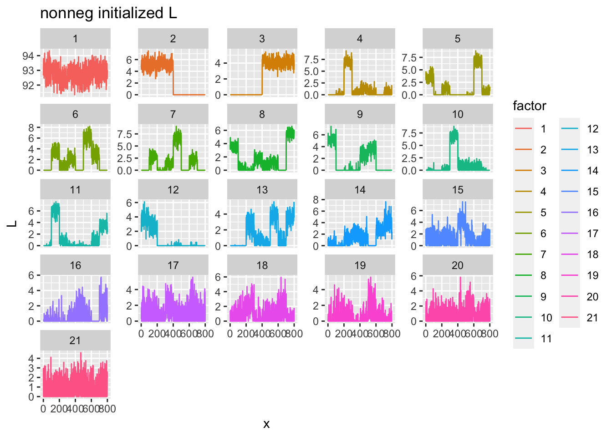
fit.init <- INIT.L(init.L=Ls$Ls, Y=Y)
fit.alt <- alt.flash(fit.init)[1] "backfit completed; elbo=-2886806.20256241"print(fit.alt$scales) [1] 6906236.6509 12171.1044 876.3497 6326.3545 6235.6738
[6] 6114.0492 6166.3819 6170.5161 6264.7021 5923.0928
[11] 5806.1601 777.7087 745.2437 826.9619 740.8977
[16] 731.1127 713.9186 736.5174 696.3342 753.5335
[21] 793.4728plotL(fit.alt$A.l, 'result: alt-flash with nonneg init')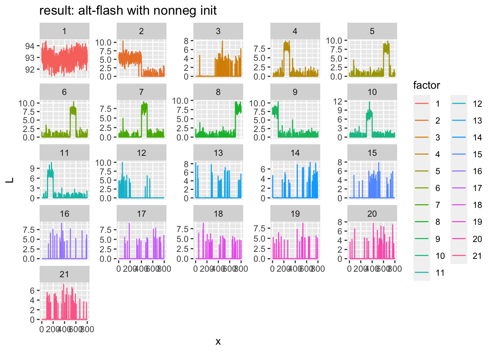
Ls <- scaleL.qp(Y, L0, scale.min=1e-8) [1] 6.909356e+06 9.730537e+03 8.591216e+03 1.000005e-08 5.354729e+03
[6] 2.154347e+03 4.043689e+03 9.107954e+03 7.489722e+03 3.299867e+03
[11] 7.583328e+03plotL(Ls$Ls, title='oracle L') 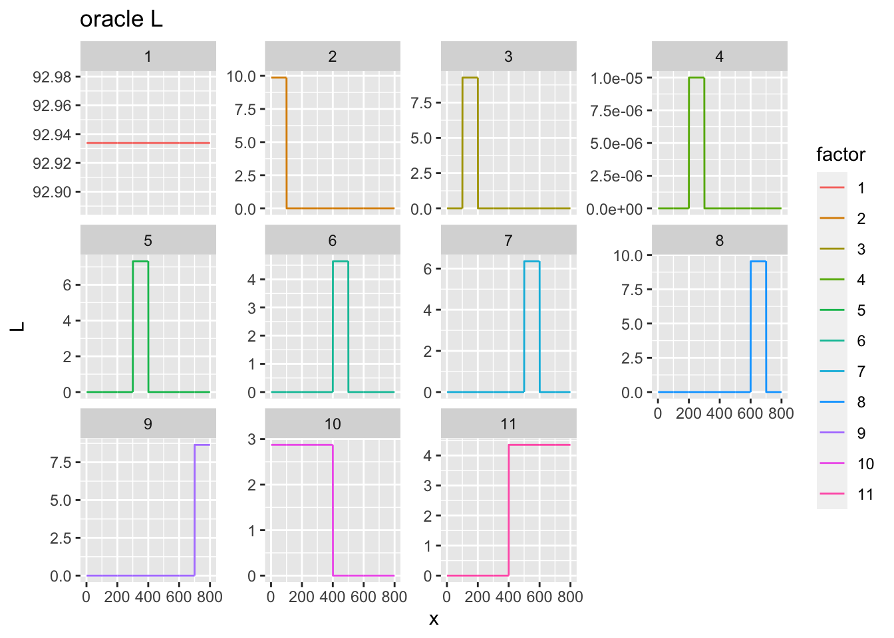
fit.init <- INIT.L(init.L=Ls$Ls, Y=Y)
fit.alt <- alt.flash(fit.init)[1] "drop 1 factor(s); 10 factor(s) remaining"
[1] "backfit completed; elbo=-2890098.8985469"print(fit.alt$scales) [1] 6905892.448 6594.464 5967.065 5970.900 6088.295 6079.375
[7] 6369.574 6182.114 6357.591 12537.397plotL(fit.alt$A.l, 'result: alt-flash with oracle init')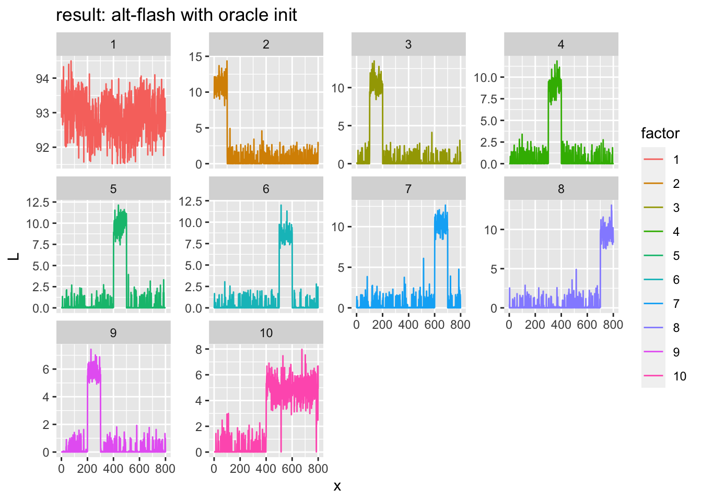
since the fitted L and F are identical, I report only L
for (seed in 2:5){
set.seed(seed)
X <- X0 + matrix(rnorm(800*2000, 0, 0.5), nrow=800, ncol=2000)
Y <- X %*% t(X)
print(paste0('seed=',seed))
# nonneg init
temp.obj <- INIT.L.NonNeg(Y, verbose=0)
Ls <- scaleL.qp(Y, temp.obj$L, scale.min=1e-8, print.scale=FALSE)
plotL(Ls$Ls, title=paste0('seed=',seed, ': nonneg initialized L'))
fit.alt <- alt.flash(INIT.L(init.L=Ls$Ls, Y=Y))
print(fit.alt$scales)
plotL(fit.alt$A.l, paste0('seed=',seed,': alt-flash w/ nonneg init'))
# oracle init
fit.alt <- alt.flash(INIT.L(init.L=scaleL.qp(Y, L0, scale.min=1e-8, print.scale=FALSE)$Ls, Y=Y))
print(fit.alt$scales)
plotL(fit.alt$A.l, paste0('seed=',seed,': alt-flash w/ oracle init'))
}[1] "seed=2"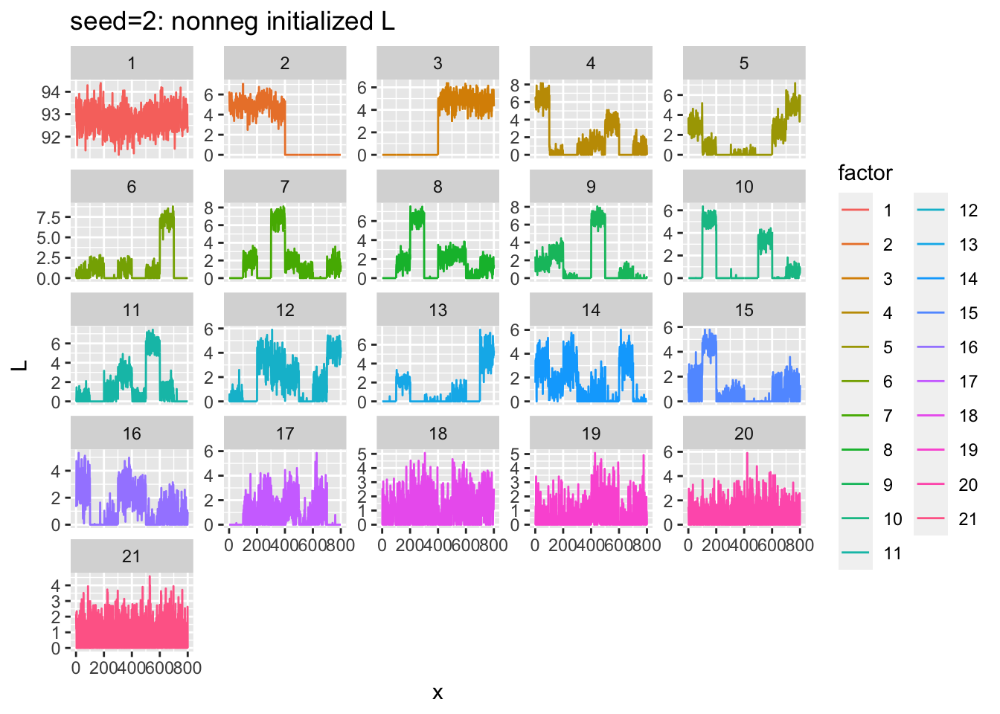
[1] "backfit completed; elbo=-2885839.46079691"
[1] 6904287.2372 12320.9143 896.5558 6344.7626 793.4918
[6] 6398.1716 5954.8691 6253.6496 6083.9578 5575.2401
[11] 6396.9602 775.5527 6140.1423 907.4035 847.8500
[16] 733.0191 705.0479 771.4244 731.0696 765.2271
[21] 749.3376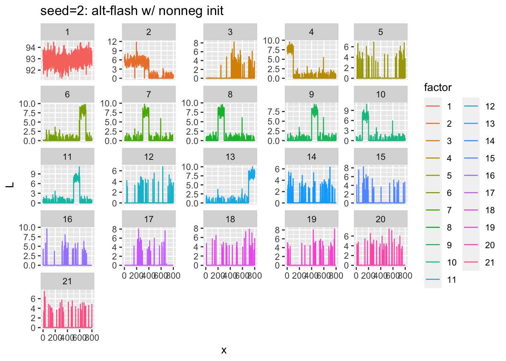
[1] "backfit completed; elbo=-2888439.94593301"
[1] 6904595.0458 6454.5461 5833.3190 6330.9562 5901.9240
[6] 5918.1258 6266.1048 6660.4247 6574.3372 537.6168
[11] 11875.5281[1] "seed=3"Warning in sqrt(scale[k]): NaNs produced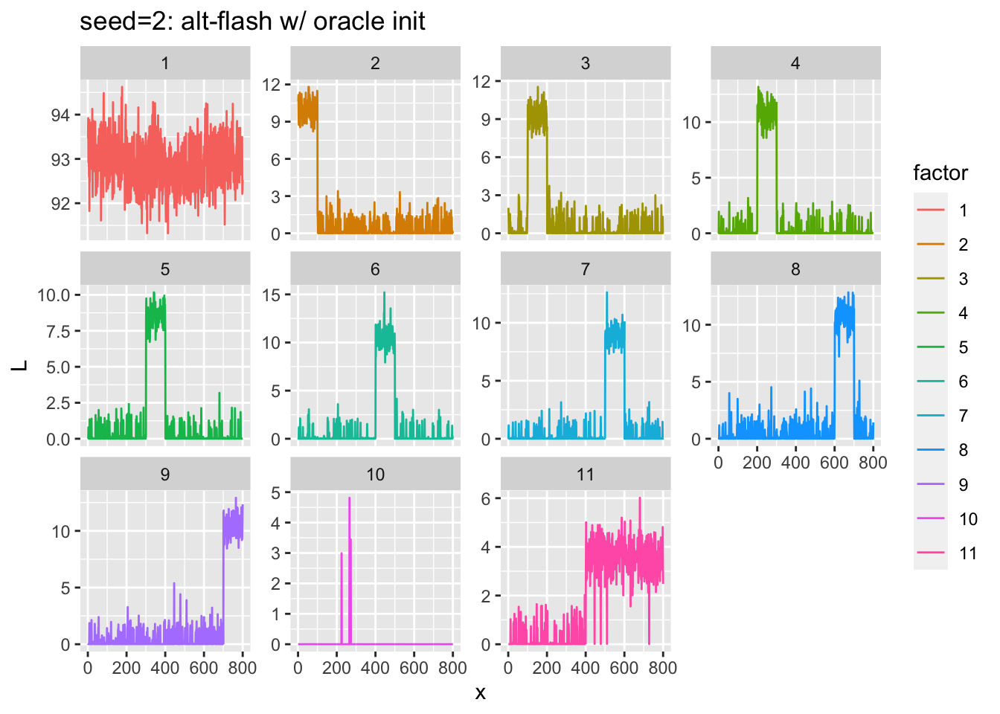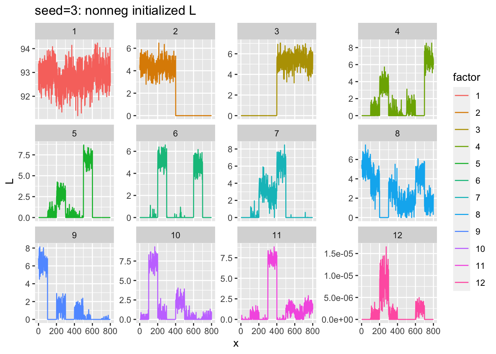
[1] "backfit completed; elbo=-2889456.16915674"
[1] 6902790.6791 6250.5483 12206.0753 6236.4743 6464.3181
[6] 6216.2843 6199.1811 977.6373 6424.5766 5845.3929
[11] 5880.2402 572.3860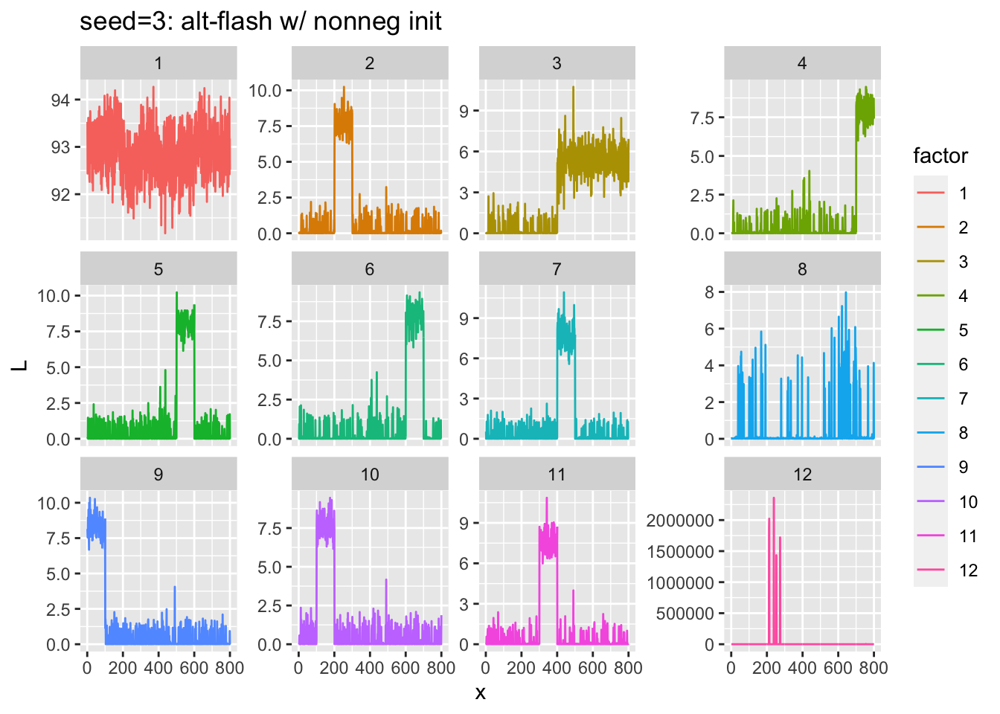
[1] "drop 1 factor(s); 10 factor(s) remaining"
[1] "backfit completed; elbo=-2889820.55542473"
[1] 6902747.098 6433.098 5838.434 6279.235 5894.828 5910.584
[7] 6305.691 6329.444 6443.515 12531.739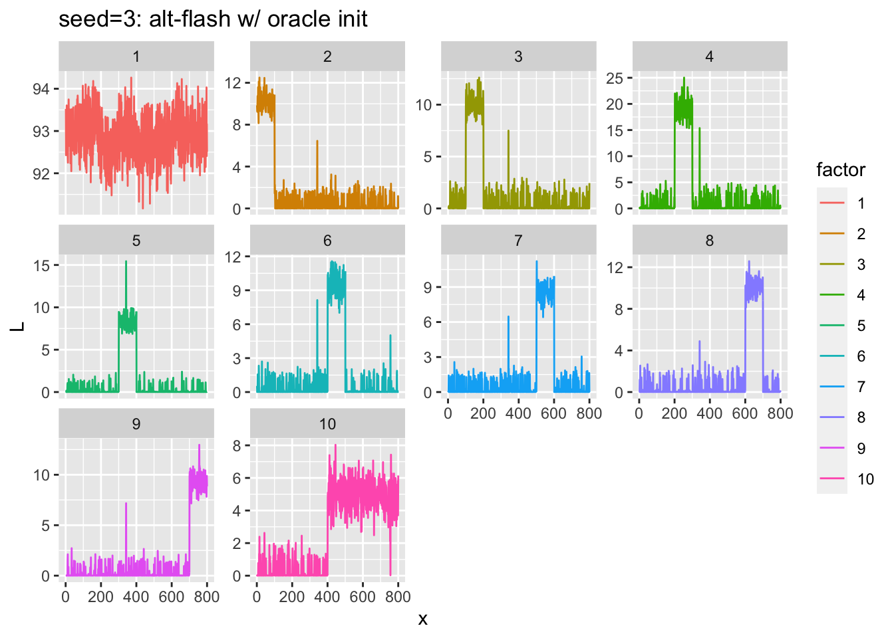
[1] "seed=4"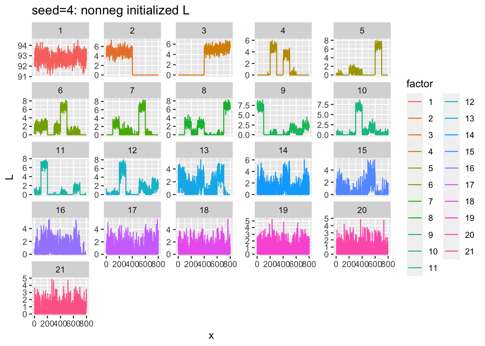
[1] "backfit completed; elbo=-2885465.21695518"
[1] 6905381.8732 819.1976 11601.5019 803.9769 6212.3095
[6] 6254.0703 6094.4111 6115.7417 6258.7032 5844.8151
[11] 5600.7671 6333.5844 814.2933 709.2552 733.8955
[16] 758.6229 744.2350 725.0656 773.4084 773.1159
[21] 777.4064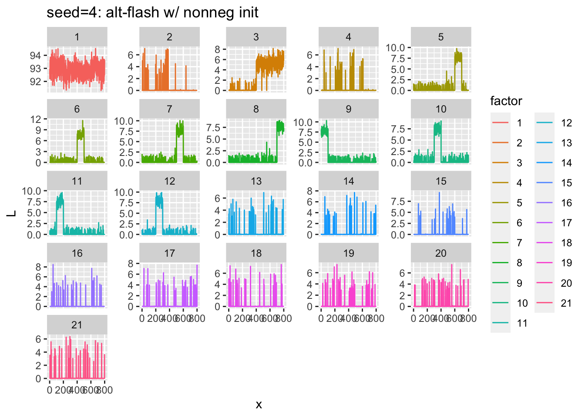
[1] "drop 1 factor(s); 10 factor(s) remaining"
[1] "backfit completed; elbo=-2888393.21866465"
[1] 6905395.276 6256.848 5685.845 6363.863 5942.507 6209.246
[7] 6112.154 6333.827 6123.772 11905.375[1] "seed=5"Warning in sqrt(scale[k]): NaNs produced
Warning in sqrt(scale[k]): NaNs produced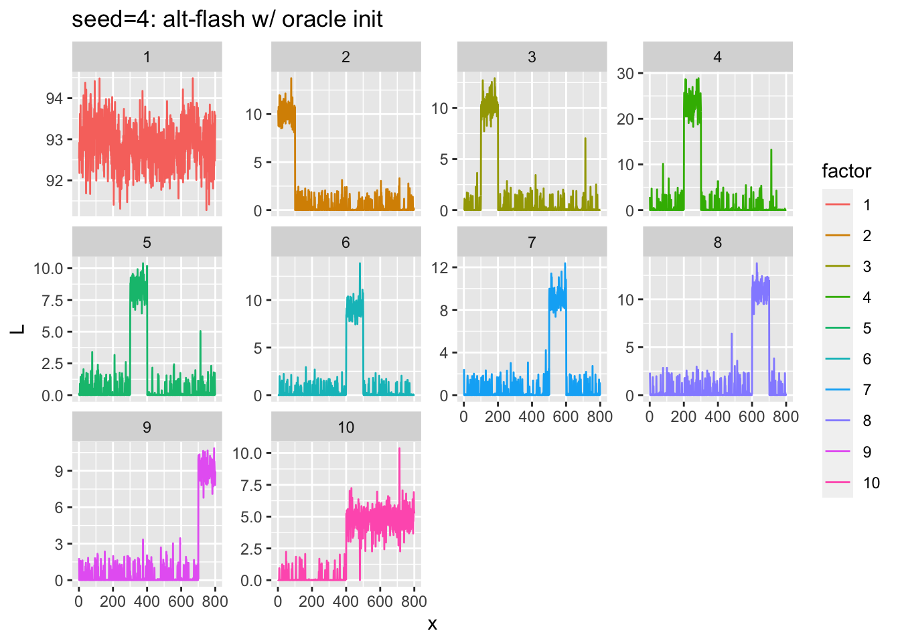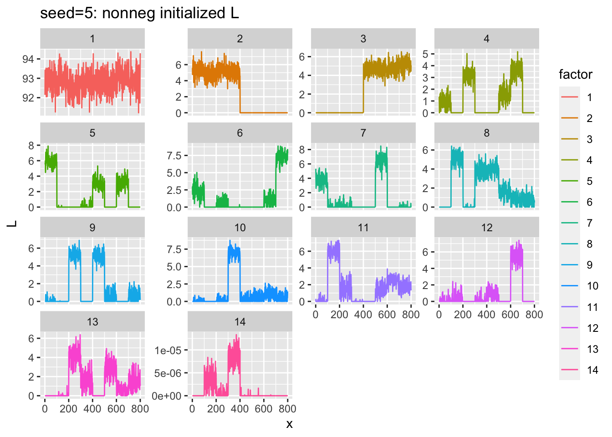
[1] "drop 1 factor(s); 13 factor(s) remaining"
[1] "backfit completed; elbo=-2890291.38895384"
[1] 6904555.8387 12305.3623 869.0581 781.4188 6512.5831
[6] 6280.5143 6252.5784 5999.3283 802.6533 6000.4338
[11] 5985.8689 6044.1822 6082.2243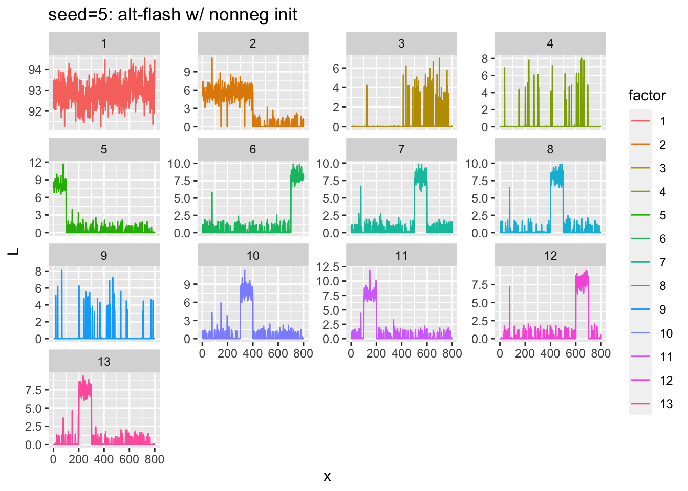
[1] "drop 1 factor(s); 10 factor(s) remaining"
[1] "backfit completed; elbo=-2890988.57162398"
[1] 6904925.036 6374.243 5997.713 6421.049 6131.450 6125.579
[7] 6187.965 6170.098 6221.208 11497.944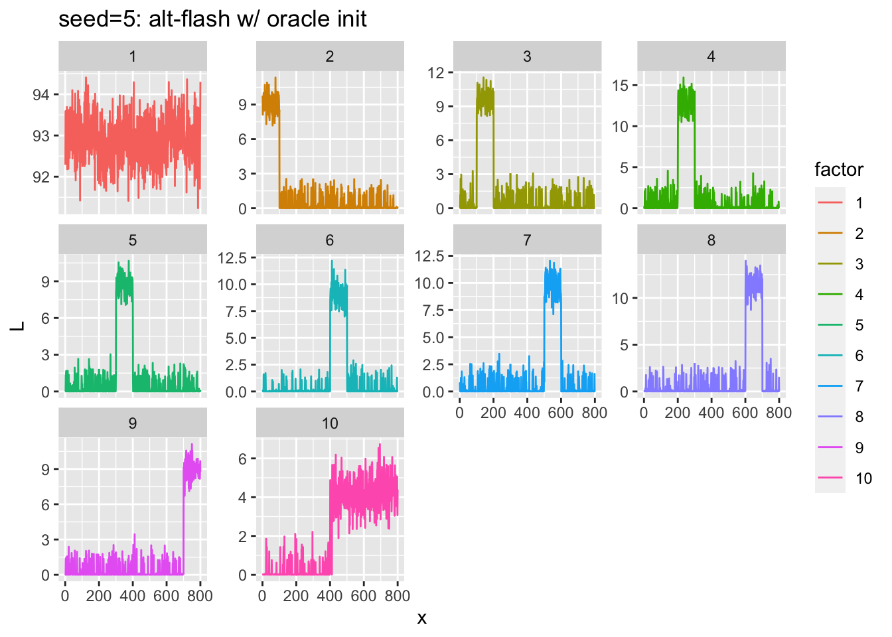
sessionInfo()R version 4.1.1 (2021-08-10)
Platform: aarch64-apple-darwin20 (64-bit)
Running under: macOS Big Sur 11.6
Matrix products: default
LAPACK: /Library/Frameworks/R.framework/Versions/4.1-arm64/Resources/lib/libRlapack.dylib
locale:
[1] en_US.UTF-8/en_US.UTF-8/en_US.UTF-8/C/en_US.UTF-8/en_US.UTF-8
attached base packages:
[1] compiler stats graphics grDevices utils datasets methods
[8] base
other attached packages:
[1] ebnm_0.1-50 gridExtra_2.3 forcats_0.5.1 stringr_1.4.0
[5] dplyr_1.0.7 purrr_0.3.4 readr_2.0.1 tidyr_1.1.3
[9] tibble_3.1.4 ggplot2_3.3.5 tidyverse_1.3.1
loaded via a namespace (and not attached):
[1] httr_1.4.2 jsonlite_1.7.2 splines_4.1.1 modelr_0.1.8
[5] assertthat_0.2.1 horseshoe_0.2.0 mixsqp_0.3-43 highr_0.9
[9] deconvolveR_1.2-1 cellranger_1.1.0 yaml_2.2.1 pillar_1.6.2
[13] backports_1.2.1 lattice_0.20-44 quadprog_1.5-8 glue_1.4.2
[17] digest_0.6.27 promises_1.2.0.1 rvest_1.0.1 colorspace_2.0-2
[21] htmltools_0.5.2 httpuv_1.6.2 Matrix_1.3-4 pkgconfig_2.0.3
[25] invgamma_1.1 broom_0.7.9 haven_2.4.3 scales_1.1.1
[29] whisker_0.4 later_1.3.0 tzdb_0.1.2 git2r_0.28.0
[33] farver_2.1.0 generics_0.1.0 ellipsis_0.3.2 withr_2.4.2
[37] ashr_2.2-47 cli_3.0.1 magrittr_2.0.1 crayon_1.4.1
[41] readxl_1.3.1 evaluate_0.14 fs_1.5.0 fansi_0.5.0
[45] xml2_1.3.2 truncnorm_1.0-8 tools_4.1.1 hms_1.1.0
[49] REBayes_2.2 lifecycle_1.0.0 trust_0.1-8 munsell_0.5.0
[53] reprex_2.0.1 irlba_2.3.3 rlang_0.4.11 grid_4.1.1
[57] rstudioapi_0.13 labeling_0.4.2 rmarkdown_2.10 gtable_0.3.0
[61] DBI_1.1.1 R6_2.5.1 lubridate_1.7.10 knitr_1.33
[65] fastmap_1.1.0 utf8_1.2.2 workflowr_1.6.2 rprojroot_2.0.2
[69] stringi_1.7.4 SQUAREM_2021.1 Rcpp_1.0.7 vctrs_0.3.8
[73] dbplyr_2.1.1 tidyselect_1.1.1 xfun_0.25